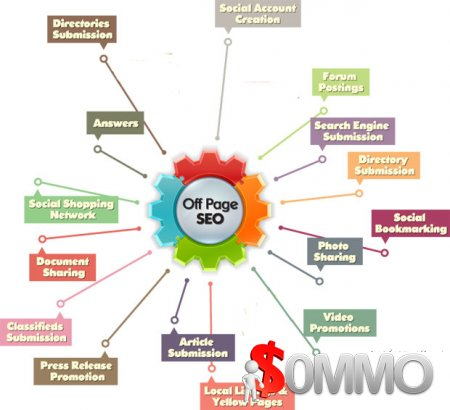

Search Engines Optimization (SEO) is one of the most important parts of your blog which you must do properly. This will help to rank your blog better in search engine results pages and drive massive traffic to your blog. If you’re a blogger or webmaster then you must be aware about SEO because it’s change regularly. You must aware about latest SEO techniques. Being an SEO’s you must have good knowledge about On-page and Off-page SEO as both are important to rank your targeted keywords better in SERPs.
A Few days ago, I published a post about “Top 10 On-Page SEO Techniques You Must Follow”. Now, Here I’m going to share some Lates Off Page SEO Techniques which will help to boost your blog ranking and drive huge traffic to your blog from search engines. So let’s have a look at these 20 latest off page SEO techniques and follow to get a good position in SERPs.

20 Latest Off Page SEO Techniques 2016
Create Strong Community on Social Networking Sites
Creating a strong online community is one of the most important and major parts of today’s off page SEO. As Google and other popular search engines take social sharing as ranking signal, so you must aware to get more social shares of your blog content. Just join some popular social.comworking sites like Twitter, Pinterest, Facebook, Google+ Linkedin, etc. and share your blog content on a regular basis. You must create a complete profile with your detail information on those social.comworking sites and become friends with your niche connected bloggers and webmasters. Join in various communities on those social.comworking sites and try to be always active. Help people, ask them for help and also invite them to join and share your blog content on their social profiles, this will helps to create a strong online community.
Find Similar Niche Blogs for Link Building Opportunities
Link building on similar niche blog or sites is one of the most powerful and effective ways to rank your targeted keywords better in SERPs. But it is really not easy to find similar niche blog or sites with link building opportunities if you’re not expert in off page SEO. Find your similar blogs and create backlinks through blog commenting, guest posting or exchange links with them. Here are some best ways to find similar niche blogs to build backlinks.
- Similar Site Search: Similar Site Search is one of the most powerful search tools to find similar website and blog. You can search using targeted keywords or blog URL through this tool to find similar niche blogs and sites easily and quickly.
- Alltop: Alltop is another popular blog directory where you can also find several blogs similar to your niche.
- Using Blog Catalog: The Blog Catalog is a web blog directory where will find thousands of blogs with various niches. Just go the this blog directory and find the similar niche blogs from category section.
- Using Google: Who doesn’t know about the power of Google. Just search on Google to find similar niche blogs with link building opportunities.
3. Blog Commenting
Blog commenting is one of the oldest link building technique which is still most popular and effective off page SEO technique. You can easily build high quality backlinks through blog commenting and finding similar blogs is not so tough. You can easily find similar niche blogs using search engines like Google. Just go to the Google and search using these search patterns
- Keyword “comment here” (e.g. SEO tips “comment here”)
- Keyword “add comment”
- Keyword “submit comment”
- Keyword “leave a comment”
- Keyword “Powered by WordPress”
- Keyword “Powered by BlogSpot”
- Keyword “Post a Comment”
You can also use some 3rd party tools to find similar niche blogs. Here are some popular 3rd party tools
Best Practices of Blog Commenting to Get Approved Easily
As a blogger, you know the importance of a valuable blog comment which added extra value to your content. Every blogger wants to get only valuable and high quality comment and also they approve only valuable comments. So you must aware about your comment before drop this any blog. Here are some checklist you can follow to get your comment approved easily and instantly.
- Leave a comment as soon as possible after publishing the new content
- Use your real name and email address
- Try to drop a comment on commentluv enabled blogs
- Read the content; at least headlines, sub-headlines, bullet points, etc. before drop any comments
- Drop comment only similar blogs
- Use internal posts URL instead of the homepage URL during blog comments
- Don’t use homepage URL or any internal posts/pages URL in comment body
- Identify your similar niche blogs with good authority and drop comments on a regular basis
- Reply to the comment to build relationship
- Start comment using the content author name and accost him/her to attract attention easily
- Don’t use any anchor text in the comment
Forum Posting
Forum posting is another popular and old off page SEO technique which is still effective to get high quality backlinks. Find your similar niche forums and join in those forums. You don’t need to join hundred of forums or community sites, just find 5-10 niche related forum with high authority, register and create your profile with all information. Use the signature option carefully to get backlinks. Post new threads or reply to others threads to get backlinks and make relationship with others. This will also help to drive huge traffic to your blog instantly.
Social Bookmarking
Social Bookmarking is a most popular way to drive massive traffic to your blog instantly. You can also build high quality backlinks using social bookmarking. Find some high authority social bookmarking sites and register on those sites to share your blog content. It is a good practice to share every new content of your blog to some popular social bookmarking sites to get huge traffic.
Blog Directory Submission
Directory submission is still alive to build quality backlinks and rank your blog better in SERPs. It takes long time to get good results from directory submission, but it works for a long time. Find some high authority directory sites like DMOZ, Yahoo Directory, etc. and submit your blog URL with proper description, meta tags and title. Try to use unique descriptions in every new submission and avoid reciprocal directories. To get good results for a single niche related blogs, submit the blog URL in blog directory sites.
Search Engines Submission
Submit your blog to the most popular search engines likes Google, Yahoo, Bing, Ask, Alexa, AOL etc. and verify with webmaster tools where available. This will help to index your blog new post quickly and also get a good position in SERPs.
Recommended: Submit Blog URL to 275 Search Engines for Free
Article Directory Submission
Article directories come with high Page Rank and High Domain & Page Authority. So you can easily get high quality backlinks from article directory sites. But you must aware about article directory sites because all article directory sites not well to submit articles and get backlinks. Try to submit unique content on article directory sites to get approved easily with backlinks. Carefully read their terms and condition before submitting any content, otherwise your submission will get rejected.
RSS Feed Directory Submission
RSS Feed Directories is the great source to get backlinks for any specific or multi-niche blog. These sites also help to get massive traffic to your blog if the blog contains informative and helpful posts for readers. These directories sites simply publish every new post of your blog using the blog feed.
Guest Posting
Now-a-days, Guest Posting is another most effective and popular off page SEO Technique, which helps in several ways to get success in blogging and online business. This is the another great way to build strong communities, get high quality backlinks and drive massive traffic to your blog. Just find some similar niche blog with high authority, send them a request for guest posting and finally send the content for guest posting if they approve. Go to the Google and search using these search patterns to find blogs with guest posting opportunities.
- Keyword + “guest blog”
- Keyword + “guest blogger”
- Keyword + “guest Column”
- Keyword + “guest article”
- Keyword + guest post
- Keyword + guest author
- Keyword + “write for us”
- Keyword + “write for me”
- Keyword + “become a contributor”
- Keyword + “contribute to this site”
- Keyword + inurl:category/guest
- Keyword + inurl:contributors
Link Exchange
Link exchange is also an old technique of off-page SEO which is also effective for link building if you do it in a proper way. Find similar blogs with similar niche and ask them for link exchange. You can also use 3rd party tools like linkmarket.com, freerelevantlinks.com, 123exchangelinks.com, linkalizer.com etc.
Question and Answering Sites
There are several questions and answering sites available with high Page Rank, Good Alexa Rank, High Domain and Page Authority. Join on those Q&A sites and find some similar questions related to your blog niche. Answer those questions and drop your blog homepage or internal post links as reference. This will help to get quality backlinks as well as drive huge traffic. Some popular Questions and Answering sites are Yahoo Answers, Quora, Blurt it, Anybody Out There, eHow, Askville etc.
Link Baiting
Link Baiting is one of the easiest ways to get backlinks for free. Just publish high quality content on your blog which helps to solve the reader’s problem and contain useful information. When someone copies your content or any part of the content, then they will also place your blog link in their post as a reference link. If they don’t, then simply ask them to place your blog link as a reference.
Video Submission
Create some video tutorial with your blog niche specific topics. Submit those videos on popular video submission sites with proper description, titles and tags. Use your blog homepage URL or any internal post URL as a reference link. This is also a popular way to get high quality backlinks because almost all video submission sites come with High Page Rank, Domain Authority and Good Alexa Rank. This also helps to drive a good amount of referral traffic to your blog.
Some Popular Video Sharing Sites
- YouTube
- Vimeo
- DailyMotion
- NetFlix
- Vube
- Hulu
- Vine
- Break
- UStream
- MetaCafe
- Twitch
Photo Sharing
Create unique images for each new content of your blog and submit those images with the Content or Image URL on popular photo sharing sites. Let your friends to like and comment on those images, this will help to rank your content better as well drive traffic to your blog.
Popular Photo Sharing Sites
- Flickr
- Picasa
- Imgur
- Photobucket
- TinyPic
- DeviantArt
- Shutterfly
- ImageShack
- ImageVenue
- Snapfish
- Twitpic
- SmugMug
- WeHeartIt
Local Listing or Local Directory Submission
If you want to rank your blog better in a specific country or region, then local listing or local directory submission can help you. This is especially helpful for local business websites to rank easily. Submit your blog URL to some high quality local directories to get targeted audience easily.
Press Release Submission
Another popular Off-Page SEO Techniques, which is still effective and popular to get quality backlinks and rank your blog better in SERPs. Create a list of some high authority press release submission sites and submit a press release on those sites. This is also helpful to rank specific keywords easily.
Classifieds Submission
Classifieds submission generally helps to get sales of any product through your blog. This is also helpful for off page SEO because you can create backlinks on some classified submission sites. This also helps to rank your blog in the targeted region.
Documents Sharing
Create some unique and attractive documents related to your blog niche and submit them on high authority documents sharing sites. This also helps to get quality backlinks and drive traffic to your blog.
Infographics Submission
Now-a-days, Infographic submission is another most popular way to get backlinks and traffic to your blog. Create some awesome and informative infographics related to your blog niche and submit them to popular infographic submission sites. You can easily create infographics using some free 3rd party tools like Canva, Visme, Piktochart etc.
Popular Infographic Submission Sites
- Visual.ly
- Infographics Showcase
- Infographics Archive
- NerdGraph
- Submit Infographics
- Love Infographics
- Infographic Site
- Infographix Directory
- Infographics Only
- Infographic Post
Over to You
Be careful about these off page SEO Techniques and applying them for your blog. You must apply these techniques in a proper way otherwise it may create a negative impact on your blog ranking.
So which techniques do you currently used to rank your blog? Let me know by commenting below and also please let me know if I missed to included any latest off page SEO techniques in this list.